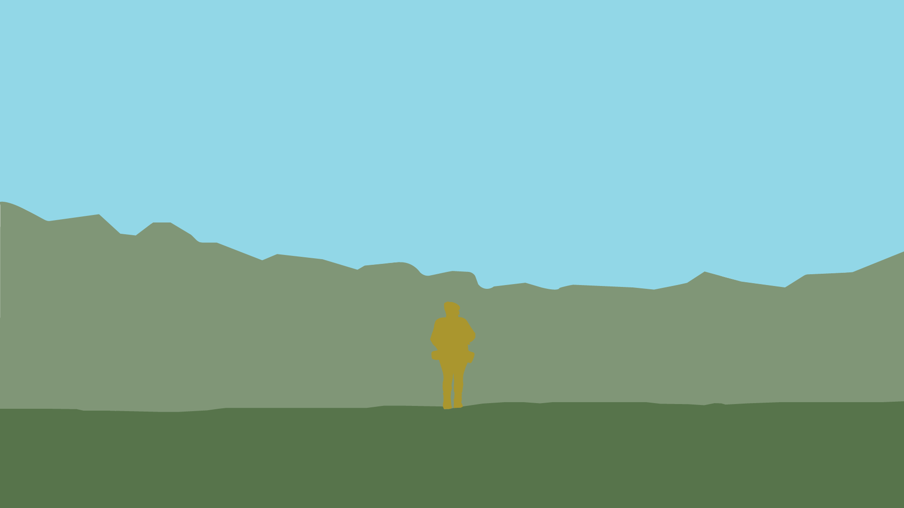

For my illustrated environment, I chose a simple image so I could focus on tools and shortcuts in Adobe Illustrator. I had fun outlining the subject and exploring color variations to give the illustration depth.
